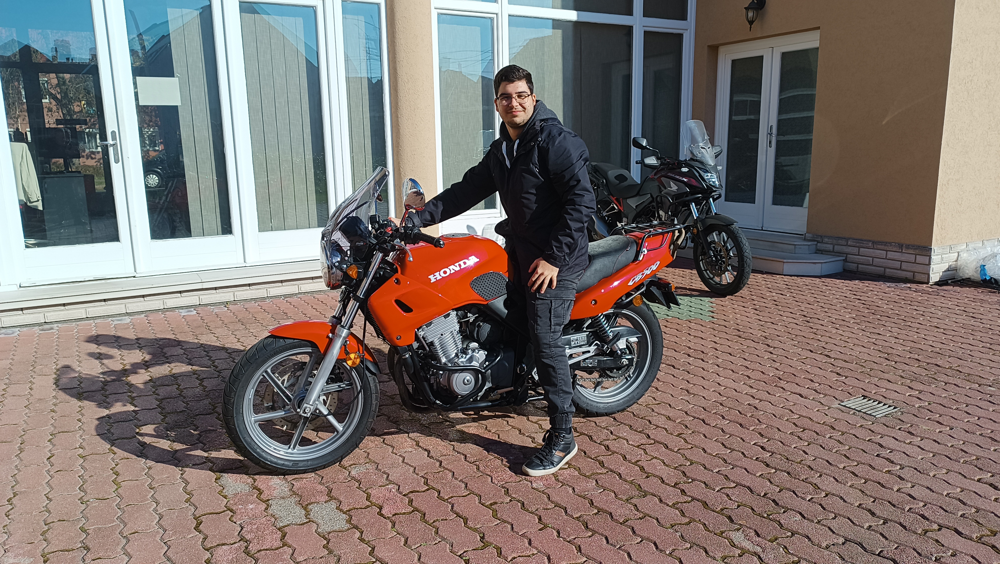

Ez az oldal azoknak készült, akik szenvedélyesen szeretik a motorozást és a kalandokat. Itt bemutatom az általam már megtett motoros túrákat, élményekkel és tippekkel kiegészítve, valamint megosztom azokat a túraterv ötleteket, amelyeket a jövőben szeretnék megvalósítani.
Célom, hogy inspirációt és segítséget nyújtanak
mindazoknak, akik szívesen fedeznék fel a világot
kétkeréken.
Böngéssz, tervezz, és csatlakoz!
Széles utatt mindenkinek!
Még sajnos nincsenek. :(
Ha motorozni szeretsz, és szeretnél felfedezni egy gyönyörű, természeti kincsekkel teli helyet, akkor Orfű és környéke ideális számodra. A Pécs melletti Orfű egy festői kis település, amely a Pécsi-medencében található, és csodálatos tájakon, erdőkön, dombokon át vezető motoros túrák ígérnek felejthetetlen élmény.
A túra során motoroddal a fenyvesekkel övezett kanyargós utakon haladhatsz, még egy csodálatos Orfűi tó panorámájában gyönyörködhetsz. Az 5 km hosszú tavat és a környező erdőket motorral körbejárva olyan tájakat láthatsz, amelyek igazi kikapcsolódást nyújtanak. Az utakon való száguldozás és a friss hegyi levegő igazi szabadságélményt adnak, újra elmerülhetsz a természet csendjében.
A túra során több érdekes célállomás is vár rád. Ne hagyd ki a híres Orfűi víztározót, amely nemcsak a motorosok, hanem a túrázók és természetlők számára is igazi ékszerdoboz. Az útvonal közben felfedezheti a környékbeli kis falvakat is, ahol megpihenhetsz, és ízletes helyi ételeket is kostolhadsz.
A Dunakanyar, Magyarország egyik legszebb tája, ideális helyszín egy kalandos motoros túrához. A túra célja, hogy felfedezd a kanyarokkal teli hegyvidéki utakat, a festői falvakat és a Duna lenyűgöző panorámáját. Az alábbi túra útvonal a motorozás élvezetét ötvözi a természet és a kultúra szépségeivel. A túra közben a természet szépségei és a történelmi helyszínek gazdagítják az élményt, így minden motoros számára felejthetetlen kalandot ígér.
Szeged, Magyarország déli ékköve, nemcsak a kulturális és történelmi látnivalóival nyűgöz le, hanem kiváló motoros túrahelyszín is! A város széles sugárútjai, festői Tisza-parti panorámája és a környező alföldi táj tökéletes úti célt kínál mindenkinek, aki két keréken szeretné felfedezni a vidéket.
A Honda CB 500 a Honda által 1993 és 2003 között gyártott közepes méretű szabványos motorkerékpárok családja voltak. Alacsony költségük, megbízhatóságuk és jó kezelhetőségük miatt népszerűek voltak. Az Egyesült Királyságban a Honda CB500 Cup versenyen is részt vettek (a nevét 2009-ben Thundersport 500-ra változtatta, amikor a Suzuki GS500 és a Kawasaki ER-5 is szerepelt).
| Kategória | Naked bike |
| Teljesítmény | 58.00 LE (42.3 kW) |
| Hengerek száma | 2 |
| Váltó | 6 sebességes |
| Üzemanyag kapacitás | 18 L |
| Hajtás | Lánc |
